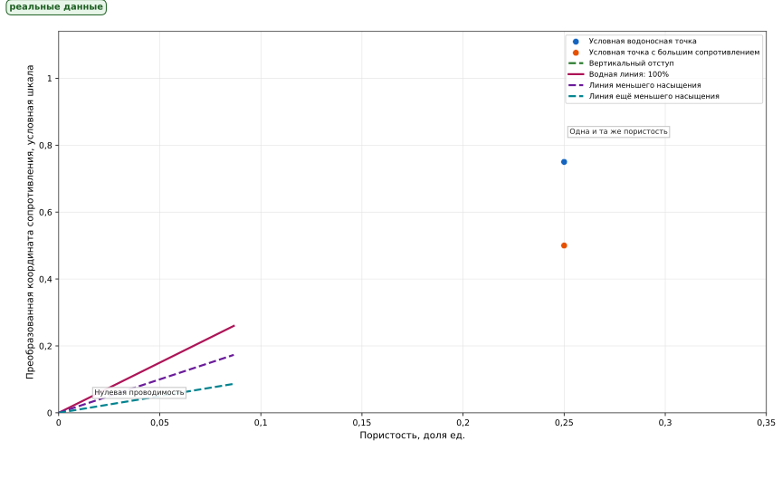
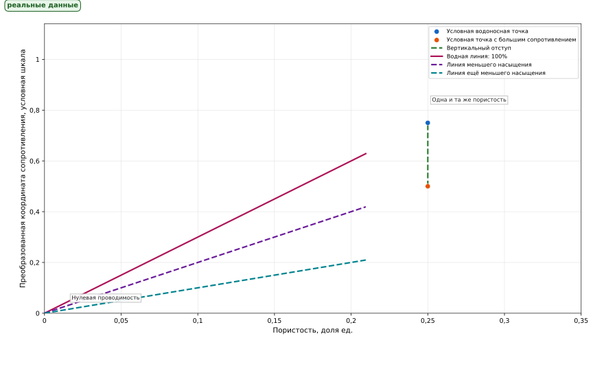
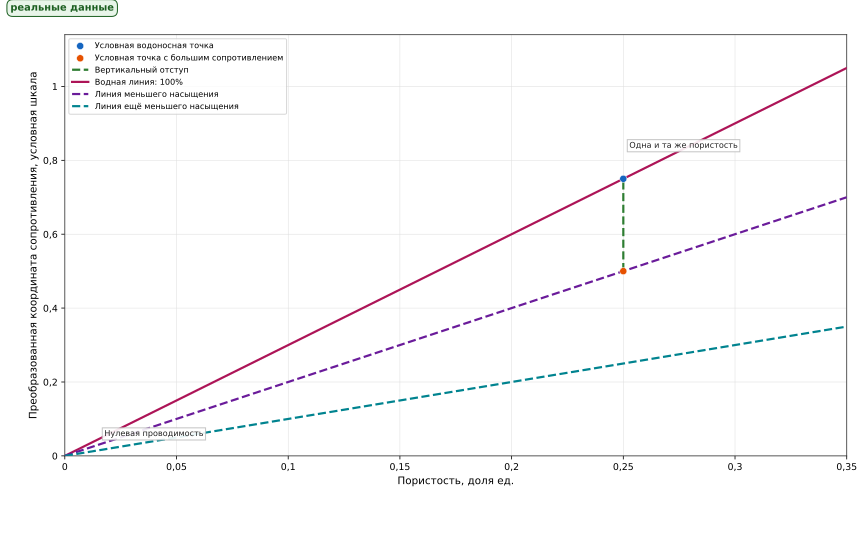

Стр. 133 · Hingle Crossplot Method
Plotting a mixture of water-bearing and hydrocarbon-bearing points on a Hingle plot results in the following attributes (as shown in Figure 7.7):
Log InterpretationШаг 46 из 66
В книге: «SATURATION CROSSPLOTS» стр. 133–134
Опирается на: шаг 45 «Почему Хингл меняет шкалу» (предпосылка), шаг 38 «Как нанести линии на Пикетта» (пример)
На диаграмме Хингла точки с углеводородами лежат ниже водной линии, прямой для водоносных точек.
Веер позволяет связать отступ от неё с долей воды в порах.
Пороговая идея. Опорная водная линия задаёт геометрию, а положение ниже неё отражает степень водонасыщенности, не количество нефти напрямую. модель



Появляется вопрос, почему большее сопротивление даёт положение ниже опорной линии.
Допущения: Наклоны и координаты точек условные, нужны только для геометрии веера, не являются численной калибровкой. Насыщения нижних линий намеренно не проставлены..
Нанесите водоносные точки и точки с углеводородами, нефтью либо газом. Водоносные точки разной пористости ложатся на прямую. При горизонтальной оси пористости прямая пересекает её в нуле и идёт вверх вправо. Там проводимость, величина, обратная удельному сопротивлению, равна нулю, а сопротивление бесконечно. стр. 133–134
«Plotting a mixture of water-bearing and hydrocarbon-bearing points on a Hingle plot results in the following attributes»
«Water-bearing points of different porosities plot along a straight line.»
«The x-intercept of the line (where conductivity is zero and resistivity is infinite)»
«zero. If the bulk density or acoustic travel time of the formation, instead of the porosity, is plotted along the x-axis, the x-intercept predicts the matrix value (matrix density or matrix travel time) of the formation.»
«The line extends to the northeast quadrant (i.e., upper right) from its x-intercept.»
По горизонтали можно отложить объёмную плотность, плотность породы с флюидом, или время пробега акустического сигнала. Тогда пересечение при нулевой проводимости даёт соответственно плотность или время пробега матрицы, твёрдой части породы. стр. 133–134
«If the bulk density or acoustic travel time of the formation, instead of the porosity, is plotted along the x-axis, the x-intercept predicts the matrix value (matrix density or matrix travel time) of the formation.»
Точки с углеводородами ниже линии 100% водонасыщенности: их большее сопротивление сдвигает их вниз. Вертикальный отступ зависит от водонасыщенности. Для её оценки нужен известный или оценённый показатель насыщения, параметр модели Арчи. Линии меньшей водонасыщенности расходятся вправо веером из общей точки на горизонтальной оси. стр. 134
«Hydrocarbon-bearing points lie below the line of 100% water saturation, moved downward from the water-bearing line by their increased resistivity.»
«The vertical distance from a point to the water-bearing line depends on the water saturation ($S_w$) of that point.»
«If the saturation exponent ($n$) is known (or can be estimated), the water saturation can be determined.»
«Lines of decreasing water saturation radiate from the x-axis intercept and spread like a fan toward the right side of the chart.»
Как прочитать отступ
Сравните точку с водной линией на той же горизонтальной координате. стр. 134
Точка ниже имеет большее сопротивление; для оценки доли воды нужен показатель насыщения.
Дано: Точка ниже водной линии, но показатель насыщения неизвестен. (модель: условие из узла)
Для оценки доли воды нужен показатель насыщения.
Сигнал точки оценивается относительно водоносной линии.
Как сравнение аномалии с базовым профилем: расстояние до линии информативнее числа само по себе.
Где аналогия перестаёт работать: Величину отступа здесь определяет нелинейная шкала и физическая модель, а не универсальная метрика отклонения.
Верный ответ: Ниже водной линии
На шкале Хингла большее сопротивление сдвигает эти точки вниз. Где это в тексте (стр. 134) →
Верный ответ: Плотность матрицы; Время пробега в матрице
Значение пересечения соответствует выбранной горизонтальной величине для матрицы. Где это в тексте (стр. 134) →
Все утверждения шага с дословной цитатой автора и страницей книги (по PDF).
Свойства диаграммы видны, когда на неё наносят водоносные точки и точки с углеводородами. наблюдение
«Plotting a mixture of water-bearing and hydrocarbon-bearing points on a Hingle plot results in the following attributes»
Водоносные точки с разной пористостью попадают на прямую. наблюдение
«Water-bearing points of different porosities plot along a straight line.»
На пересечении водной линии с осью абсцисс проводимость нулевая, а удельное сопротивление бесконечно. вывод
«The x-intercept of the line (where conductivity is zero and resistivity is infinite)»
При нулевой пористости на горизонтальной оси находится пересечение водной линии с этой осью. вывод
«zero. If the bulk density or acoustic travel time of the formation, instead of the porosity, is plotted along the x-axis, the x-intercept predicts the matrix value (matrix density or matrix travel time) of the formation.»
Если по горизонтали отложить объёмную плотность или время пробега, пересечение предсказывает плотность или время пробега матрицы. вывод
«If the bulk density or acoustic travel time of the formation, instead of the porosity, is plotted along the x-axis, the x-intercept predicts the matrix value (matrix density or matrix travel time) of the formation.»
Водная линия идёт вверх и вправо от пересечения с горизонтальной осью. наблюдение
«The line extends to the northeast quadrant (i.e., upper right) from its x-intercept.»
Точки с углеводородами ниже линии водонасыщенности 100%: большее сопротивление сдвигает их вниз. вывод
«Hydrocarbon-bearing points lie below the line of 100% water saturation, moved downward from the water-bearing line by their increased resistivity.»
Вертикальный отступ от водной линии зависит от водонасыщенности точки. вывод
«The vertical distance from a point to the water-bearing line depends on the water saturation ($S_w$) of that point.»
Водонасыщенность определима, если показатель насыщения известен или его можно оценить. вывод
«If the saturation exponent ($n$) is known (or can be estimated), the water saturation can be determined.»
Линии уменьшающейся водонасыщенности расходятся веером вправо от общего пересечения с горизонтальной осью. наблюдение
«Lines of decreasing water saturation radiate from the x-axis intercept and spread like a fan toward the right side of the chart.»
Стр. 133 · Hingle Crossplot Method
Plotting a mixture of water-bearing and hydrocarbon-bearing points on a Hingle plot results in the following attributes (as shown in Figure 7.7):
Стр. 133 · Hingle Crossplot Method
- Water-bearing points of different porosities plot along a straight line. The x-intercept of the line (where conductivity is zero and resistivity is infinite) occurs at the point where porosity is zero. If the bulk density or acoustic travel time of the formation, instead of the porosity, is plotted along the x-axis, the x-intercept predicts the matrix value (matrix density or matrix travel time) of the formation. The line extends to the northeast quadrant (i.e., upper right) from its x-intercept.
Стр. 134 · Hingle Crossplot Method
- Hydrocarbon-bearing points lie below the line of 100% water saturation, moved downward from the water-bearing line by their increased resistivity. The vertical distance from a point to the water-bearing line depends on the water saturation ($S_w$) of that point. If the saturation exponent ($n$) is known (or can be estimated), the water saturation can be determined. Lines of decreasing water saturation radiate from the x-axis intercept and spread like a fan toward the right side of the chart.
На этот шаг опираются: шаг 47 «Что извлечь из водной линии», шаг 48 «Как провести веер насыщения».
Как читать веер Хингла
Ссылки в ответе ведут к исходному тексту.